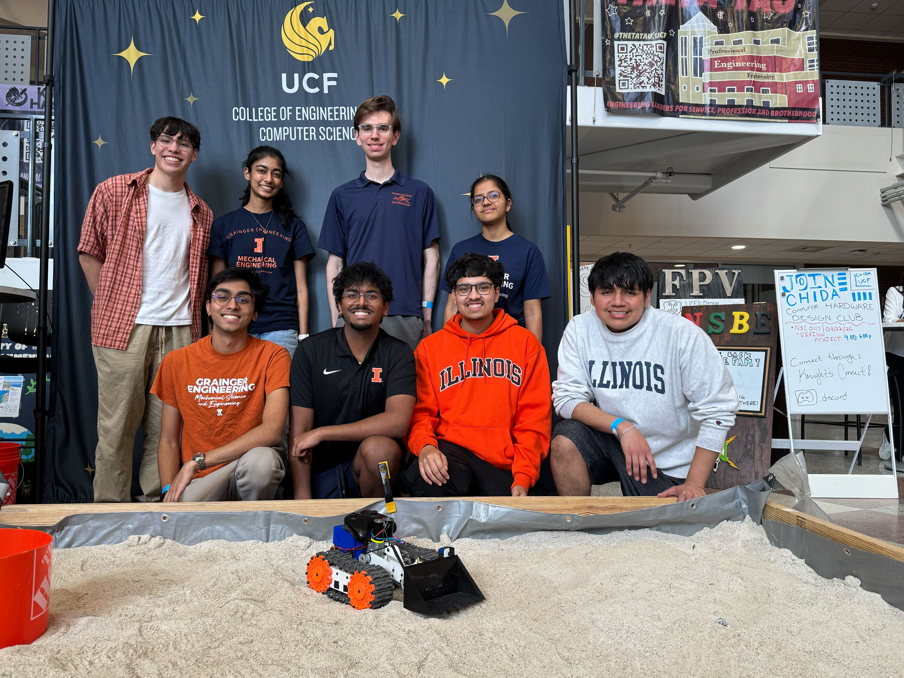
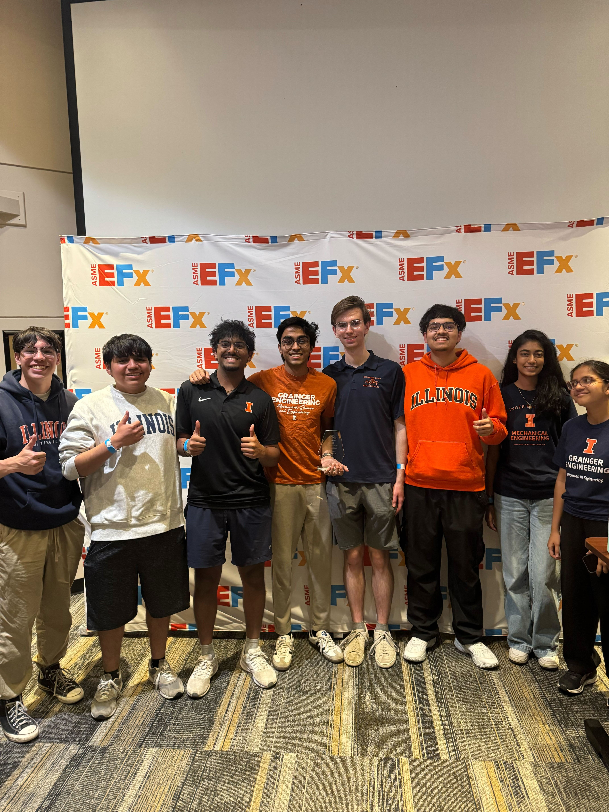

Project Overview
The ASME EFx IAM3D Challenge tasks university teams with designing, building, and operating a 3D-printed rover in FPV to excavate material from a simulated extraterrestrial environment. Competing against 11 teams from across the country at UCF, we placed 3rd and took home $250. Our rover is 94% additively manufactured — 101 of 115 components printed in PLA or SLS nylon — and was designed, iterated, and built entirely by our members.



Tracked Propulsion & Modular Chassis
We chose a tracked drivetrain over wheels for two reasons: higher ground contact area on loose sand, and the ability to print the track links directly in SLS nylon. Each of the 52 nylon links features patterned traction grooves and three M4 attachment points. Two 5203 Series Yellow Jacket planetary gear motors — one per side — drive the tracks through bevel gears, with skid-steering controlled by a BTS7960 H-bridge per side.
The chassis is split into two mirrored PLA side frames, each enclosing a sealed motor bay to block sand ingestion. Dust intrusion was identified early as the primary reliability risk, so the frames bolt to a central nylon spine via modular connecting brackets, all threaded directly in SLS nylon to eliminate heat-set inserts throughout.

Excavation Mechanism
Five excavation concepts were evaluated in a Pugh matrix — paddle wheel, rotating scoop, twin rotating wheels, excavation wheel, and bucket. The bucket won on every weighted criterion: smallest footprint, no conveyor belt required, highest reliability, and lowest complexity. The final bucket is PLA-printed with serrated leading teeth for digging efficiency, tapered side walls to funnel material in, and a perforated floor to drain sand and reduce lift weight.
The arm is a two-servo linkage: a 35 kg·cm SSERVO at the shoulder for gross elevation and a 25 kg·cm unit at the elbow for bucket tilt. They connect through a PLA H-bracket (plough connector) that went through four design iterations to eliminate interference with the servo housings while distributing bending load across a wider bearing surface. Fusion analysis confirmed the arm can lift a 1.2 kg sand payload — roughly two-thirds bucket capacity — within the servo torque limits at a 0.8 safety factor.


Electronics & FPV Control
All control logic runs on an Arduino Nano ESP32 (ESP32-S3). The driver operates via an Xbox One controller over Bluetooth — no custom radio hardware required. Two ESP32 cameras with 160° wide-angle lenses stream FPV video over Wi-Fi to a laptop on the operator table, giving the driver enough situational awareness to navigate obstacles and align the bucket for precise digs without line-of-sight to the rover.
Drive power flows through BTS7960 dual H-bridge modules rated for the continuous current the Yellow Jacket motors draw under excavation load. A SparkFun 3D Hall effect sensor mounted to the chassis serves the metal detection bonus category. All boards are housed inside the sealed PLA motor bays, which proved their worth during testing when sand worked into every exposed crevice.
Testing & Iteration
We built a dedicated student sand pit to replicate the arena surface before the competition. Testing revealed the first critical failure: the nylon bevel gears in the drive transmission wore down rapidly in sand-contaminated conditions, losing mesh and slipping under load. We replaced them with steel bevel gears — the main non-AM substitution that accounts for the gap between our 94% design intent and the 87.8% final AM score.
Sand pit runs also let us dial in the excavation routine — arm angles, dig depth, retract timing — under realistic conditions. Operating in FPV with 160° cameras required practice to judge bucket depth and alignment accurately. By competition day the team had run enough pit sessions to drive and excavate confidently.

Testing Videos
Results
3rd place out of 11 teams at the ASME EFx IAM3D Challenge at UCF — $250 prize, an 87.8% additive manufacturing score, and a rover that completed every competition run without mechanical failure. The process-selection strategy (FDM for structure, SLS for wear surfaces) proved out: only the bevel gears required a non-AM substitution across the entire build.
